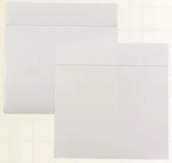
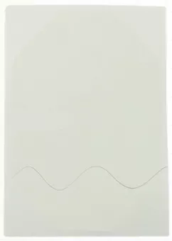

PE Film – is a universally accepted product across India. It has a mild haze factor, and it is available in die-cut format. We can offer you pre-cut eye drape pieces for quick production and accurate application in eye drapes. We can also offer you two different sizes, 95 mm X 100 mm and 145 mm X 150 mm. If you have a request for a special size, we are capable of offering that as well. PE film can be die-cut to various sizes of cannula fixators for dialysis and otherwise.
PU Film – An absolutely clear, elongation is omnidirectional. An internationally acceptable material for incision application.

